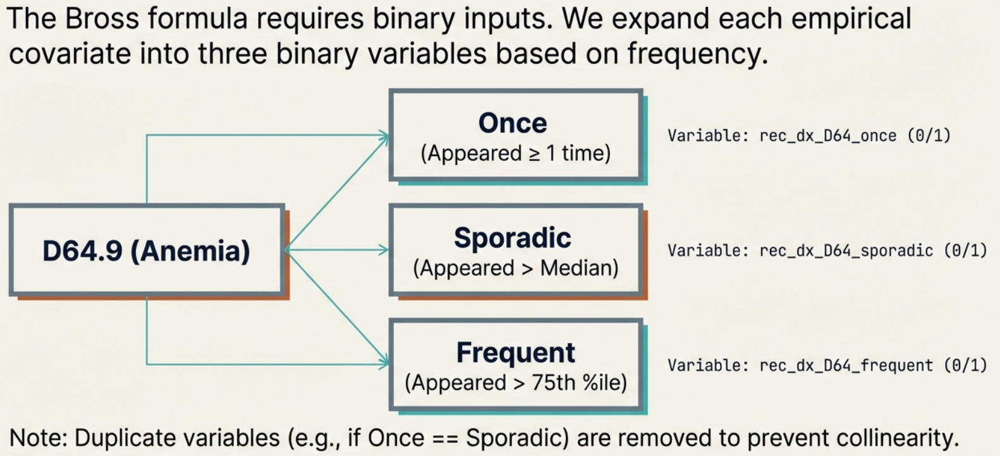

6 Step 3: Recurrence
Important
In Step 3, we take that filtered list and process them further to create binary variables for the analysis.
6.1 Genrate recurrence covariates
In this step, we generate 3 binary recurrence covariates for each of the candidate empirical covariates identified in the previous step:
- occurred at least once
- occurred sporadically (at least more than the median)
- occurred frequently (at least more than the 75th percentile)
step2 <- get_recurrence_covariates(df = out1,
patientIdVarname = "idx",
eventCodeVarname = "icd10",
patientIdVector = patientIds)6.2 Example of recurrence covariates

Important
In this step, the algorithm analyzes the specific ICD-10-CM code D64.9 (Anemia, unspecified). This code was selected in Step 2 because it appeared frequently enough in the overall dataset (e.g., in at least 20 patients).
The Goal: The algorithm must convert the simple count of how many times a patient had an anemia diagnosis into binary (Yes/No) variables. This is necessary because the Bross formula used in the next step requires binary inputs.
For the anemia code (D64.9), the algorithm generates three distinct “Recurrence Covariates” for every patient. To determine if a patient gets a “Yes” (1) or “No” (0) for these variables, their personal frequency is compared against the population’s statistics (Median and 75th Percentile).
- Did the patient have the anemia code at least once during the assessment window? (
rec_dx_D64_once) - Did the patient have the anemia code more often than the median frequency of the population? (
rec_dx_D64_sporadic) - Did the patient have the anemia code more often than the 75th percentile of the population? (
rec_dx_D64_frequent)
Output: Instead of simply recording that Patient A had “2 counts of anemia,” the hdPS algorithm assigns them three binary flags for this specific condition:
- Once: yes/no
- Sporadic: yes/no
- Frequent: yes/no
This process creates a detailed profile of the intensity of the patient’s interaction with the healthcare system regarding anemia.
| ICD-10-CM code (dimension 1) | code appeared at least once | code appeared at least more than the median | code appeared at least more than the 75th percentile |
|---|---|---|---|
| D64.9 Anemia | rec_dx_D64_once | rec_dx_D64_sporadic | rec_dx_D64_frequent |
| D75.9P Blood clots | rec_dx_D75_once | rec_dx_D75_sporadic | rec_dx_D75_frequent |
| D89.9 Immune disorder | rec_dx_D89_once | rec_dx_D89_sporadic | rec_dx_D89_frequent |
| \(\ldots\) | \(\ldots\) | \(\ldots\) | \(\ldots\) |
| E07.9 Disorder of thyroid | rec_dx_E07_once | rec_dx_E07_sporadic | rec_dx_E07_frequent |
Example of 3 binary covariates (hypothetical) created based on the candidate empirical covariates.
6.3 Recurrence covariates in the data
out2 <- step2$recurrence_data
ncol(out2)-1
#> [1] 91Here we show binary recurrence covariates for only 2 columns
6.4 Refined recurrence covariates
Below you can click to see a list of all recurrence covariates obtained in our data.
Tip
- Given that we had one dimension of proxy data, \(p=1\), at most \(n=200\) most prevalent codes (with the restriction that minimum number of patients in each code = 20), and \(3\) intensity, we could theoretically have at most \(p \times n \times 3 = 1 \times 200 \times \ 3 = 600\) recurrence covariates.
- Based on all of the restrictions, we created 91 distinct recurrence covariates.
- The merged data (analytic and proxies) size is now 7,585.
- If 2 or all 3 recurrence covariates are identical, only one distinct recurrence covariate is returned. This is why you do not see any sporadic recurrence covariate here.
- Recurrence covariate creation is for each patient, and it is possible to have same code occur multiple time because we are working with a 3 digit granularity (possible to have medications from other codes within same ICD-10 3 digit granularity).